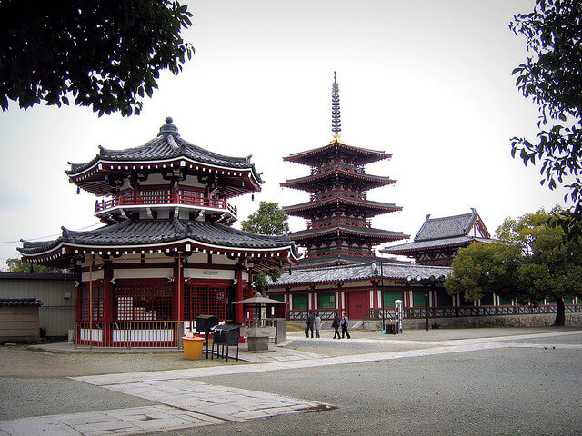
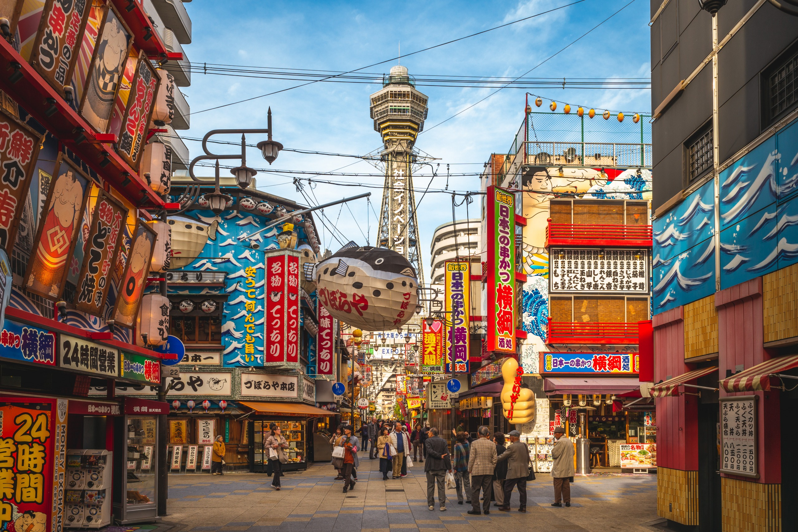

Visiter Osaka : quelles sont les meilleures choses à faire et voir dans la troisième plus grande ville du Japon ?
La ville se targue d’être différente, montrant un visage plus authentique du Japon comparé à la mégapole tokyoïte. Elle peut être difficile à prendre en main, même pour le plus chevronné des voyageurs. Même le réseaux de transports d’Osaka est différent de ceux des autres villes japonaises. Mais la ville a beaucoup à vous offrir, et vous avez besoin de bien préparer votre séjour ici avant de partir. Faites une liste des choses à faire à Osaka et étudiez le plan de la ville, et tout ira bien. D’autant que j’ai déjà fait une partie du boulot pour vous :
1. Le Château d’Osaka
Le château d’Osaka est un réel chef-d’oeuvre de l’architecture japonaise. Il fut construit en 1583 par Toyotomi Hideyoshi. En 1945, un raid aérien américain détruisit le donjon. Le château a depuis été rénové et abrite à présent l’un des plus grands « musées » (c’est une expo à lui seul) de la région et il est entouré par l’un des plus beaux parcs de la ville.
2. Dōtonbori et le quartier de Namba
La rue de Dōtonbori est un peu le Times Square d’Osaka. Elle est située dans le quartier de Namba où l’on compte un nombre incroyable de centres commerciaux, de restaurants et de lieux pour sortir et s’amuser. La vie nocturne y est en effet animée et les enseignes illuminent cette rue unique à Osaka. Sa popularité n’a fait que grandir suite aux nombreux films et émissions locales qui ont été tournés ici.
3. Le sanctuaire Sumiyoshi-taisha
Sumiyoshi-taisha, également connu sous le nom de Grand sanctuaire Sumiyoshi, a été construit au début du 3ème siècle, avant l’introduction du bouddhisme au Japon. Cela signifie qu’il a été bâti sans aucune autre influence religieuse que le shintoïsme. L’architecture est donc absolument unique, ce qui fait de lui non seulement l’un des plus anciens sanctuaires dans tout le Japon, mais aussi l’un des plus intéressants à visiter. C’est l’un des sanctuaires les plus visités au Japon au cours de la Hatsumōde (première visite dans un sanctuaire après le Nouvel An japonais).
4. Umeda Sky Building
L’Umeda Sky Building offre la plus belle vue panoramique sur la ville d’Osaka. Dessiné par l’architecte japonais Hiroshi Hara, le bâtiment comporte 2 tours de 40 étages reliées par un pont et est admirablement bien conçu. Il est possible d’accéder à la plateforme d’observation de ce gratte-ciel haut de 173 mètres pour admirer la ville de jour comme de nuit. Le soir, c’est encore plus beau lorsque Osaka est illuminée. Umeda Sky Building se trouve dans le quartier d’Umeda et l’entrée est de 1000 yens (7€). On y va seulement pour la vue, mais ça en vaut la peine.
5. Le temple Shi Tennō-ji

Le temple Shi Tennō-ji (bouddhiste) a été construit par le gouvernement en 593 ce qui en fait l’un des temples les plus anciens au Japon ainsi que le premier temple construit par l’Etat. Pour l’histoire, c’est le Prince Shōtoku qui invita trois charpentiers coréens du royaume Baekje pour sa construction. Le temple fut détruit et reconstruit à plusieurs reprises, mais il a toujours été rebâtit pour ressembler à l’architecture initiale du 6 ème siècle. Visiter ce temple vaut encore plus le coup pour la découverte du jardin du Gokuraku-jôdô. Ce dernier est superbe et particulièrement populaire au cours du printemps (à partir d’avril) pour ses cerisiers en fleur.
6. Aquarium Kaiyukan
L’aquarium Kaiyukan d’Osaka est l’un des plus grands aquariums publics du monde. Il abrite 27 réservoirs contenant près de 11 000 tonnes d’eau dans lesquelles vivent plus de 470 espèces et 29 000 animaux. En sortant de l’aquarium, vous n’aurez pas de mal à trouver face à vous l’une des plus hautes Grandes Roues du monde.
7. Le musée Momofuku Ando Instant Ramen
Ce musée est assez étonnant et surtout différent des autres musées ordinaires… Bien qu’il retrace l’histoire d’une invention connue internationalement, cela reste très original : vous connaissez les noodles ? Ces nouilles qui ne valent presque rien et qui sont prêtes en quelques secondes avec de l’eau chaude. Le musée Rāmen (la marque qui en commercialise le plus au Japon) vous permet d’en savoir plus et vous propose même de fabriquer vos propres noodles.
8. Visitez les Universal Studios Japan
Pour vous amuser à Osaka, rendez-vous au parc d’attractions Universal Studios Japan. Parcourez les différents « villages » du parc : Hollywood, New York, San Francisco, Jurassic Park, Lagoon, Waterworld, Amity Village et Universal Wonderland, et à partir de 2014 un nouveau sur le thème de Harry Potter. Idéal si vous voyagez en famille ou si vous voulez changer des visites classiques (temples, sanctuaires, musées)…
9. Le Musée national d’art d’Osaka
Le Musée National d’Art, situé dans le centre d’Osaka sur l’île de Nakanoshima, contient deux étages souterrains qui présentent des expositions spectaculaires d’art contemporain. Les œuvres exposées sont locales et internationales. Le musée en lui même en est une, représentant l’ondulation de roseaux dans le vent.
10. La nourriture locale
Pensez lors de votre voyage à Osaka de déguster les mets locaux. Au programme : Okonomiyaki (en quelques sortes une omelette locale), Takoyaki (boulettes de pâte), Kitsune Udon (soupe). N’hésitez pas à tester la street-food, très présente à Osaka.
11. Le quartier de Shinsekai

Conçu à l'origine comme un lieu de divertissement ultra moderne, Shinsekai présente aujourd'hui un tout autre visage ; celui du charme rétro de l'après-guerre. Ses shotengai, ses salles d'arcades, ses salles de pachinko et ses très nombreuses enseignes lumineuses particulièrement hautes en couleur raviront les amateurs de kitsch et de pittoresque. Mais au-delà de l'ambiance rétro générale, plusieurs lieux tiennent lieu de véritables symboles du quartier, comme la tour Tsûtentaku, Billiken, Janjan Yokocho Alley, Le théâtre Asahi et le Spa World.